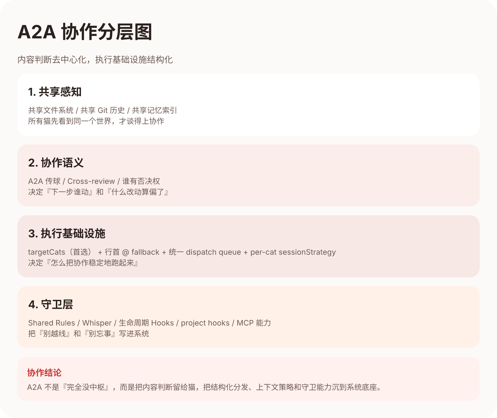

真实产出：A2A 协作四层架构图 — 来自 Cat Café 教程素材
独立判断每猫自主
▶
@ 传球A2A 路由
▶
跨族 ReviewClaude≠GPT
▶
执行队列并发安全
▶
Hook 护栏40 规则
四层系统 — "不只是 Prompt Engineering"
声明层
定义边界与协议
CLAUDE.md · Skill YAML · shared-rules
协调层
谁和谁协作
dispatch queue · session strategy · A2A 路由
约束层
想违规都过不去
worktree 隔离 · Redis 圣域 · Quality Gate
进化层
系统从错误学习
evidence.sqlite · Knowledge Feed → 人机共审
分层编排 — "我们有编排，只是不在跨猫层"
单猫内部：允许中央编排（如 OMOC Sisyphus 编排器）
跨猫协作：坚持对等判断，不设 orchestrator
跨猫协作：坚持对等判断，不设 orchestrator
✓ 猫内编排自由
✗ 跨猫中央决策
✓ 统一执行队列
✗ 跨猫汇报关系
关键里程碑 — 50 天演化路径
D1 单猫实验
D7 双猫协作
D14 三猫+护栏
D25 飞书/TG/钉钉
D40 知识涌现
D50 149 Feats
| 维度 | Boss 模式 Agent Teams/OMOC |
状态图 LangGraph |
角色 Pipeline CrewAI |
Cat Café |
|---|---|---|---|---|
| 内容判断 | Lead 决定 | 路由逻辑决定 | 角色流程决定 | 每只猫独立判断 |
| 任务路由 | boss 分配 | edge 决定 | 上一步→下一步 | 猫猫自主 @ 路由 |
| 能否质疑 | 向上汇报 | 节点无权改图 | 只能往下传 | 任何猫可否决 |
| 单点失败 | Lead 挂=系统停 | 图错=全错 | 中间断=后停 | 降级但不崩 |
| 偏见抵消 | Lead 偏见=系统 | 图作者偏见 | SOP 偏见 | 跨厂商交叉 review |
| 扩展能力 | 加 worker | 加节点+边 | 加角色 | 加猫 = 加判断力 |
| 学习机制 | 无/手写 prompt | checkpoint 持久化 | 无跨 run 记忆 | 跨 session 知识积累 |
| 安全保证 | 依赖 Lead 审查 | 无护栏 | 输出验证弱 | 三层护栏体系 |
关键证据 — 架构有效性实证
F088 Chat Gateway 交付速度
2天
飞书 2 天 · Telegram 1.5 天 · 钉钉/微信各半天
每平台仅需实现 3 方法 ≈ 1000-2000 行
原估 6-10 周 → 实际 5 天全部上线
验证：好架构让交付速度 10× 提升
每平台仅需实现 3 方法 ≈ 1000-2000 行
原估 6-10 周 → 实际 5 天全部上线
验证：好架构让交付速度 10× 提升
F139 独立调研涌现
N×判断力
三猫独立调研 → 砚砚推翻宪宪抽象
5 维度拆分 > ScheduleAdapter 方案
先独立思考 → 交叉校准 → 收敛共识
5 维度拆分 > ScheduleAdapter 方案
先独立思考 → 交叉校准 → 收敛共识
跨家族 Review 真实案例
3 P1
GPT review Claude 代码一次找 3 个 P1：
· 未清洗用户输入注入
· 飞书 webhook 缺签名验证
· 转发丢发送者身份
· 未清洗用户输入注入
· 飞书 webhook 缺签名验证
· 转发丢发送者身份
vs Anthropic Harness 差异
50天
Harness: 单任务脚手架 (3-6h 生命周期)
Cat Café: 长期协作机制 (50天 149 Feat)
共鸣: 做事与判断分离 · 上下文是核心
差异: Cat Café 有跨厂商+记忆+护栏
Cat Café: 长期协作机制 (50天 149 Feat)
共鸣: 做事与判断分离 · 上下文是核心
差异: Cat Café 有跨厂商+记忆+护栏
为什么上限不在中心节点？
中央编排 = 1× 判断力 × N× 执行力 │ 对等碰撞 = N× 判断力 → 涌现
铲屎官 = 方向漏斗（顶层收/底层放）· 不限内容，约束方向 · 跨厂商认知多样性 = 独立第三方独有优势